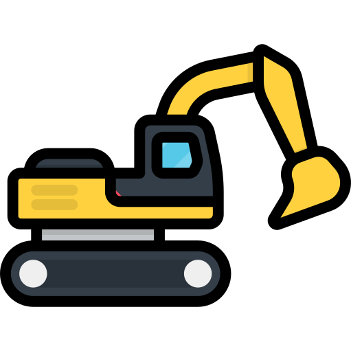

Cargando…
- Fecha
- —
- Hora
- —
- Origen
- —

Nova Track
Control excavadora IoT
Chasis
Vehículo físico sin confirmar
Prueba: avanza · alto · baila
Sin orden
Sin orden
Brazo y garra
Cargando…
| # | Movimiento | Fecha | Hora |
|---|
Las secuencias de DEMO e IA no se guardan en el historial.
Para mejorar la experiencia gira tu dispositivo